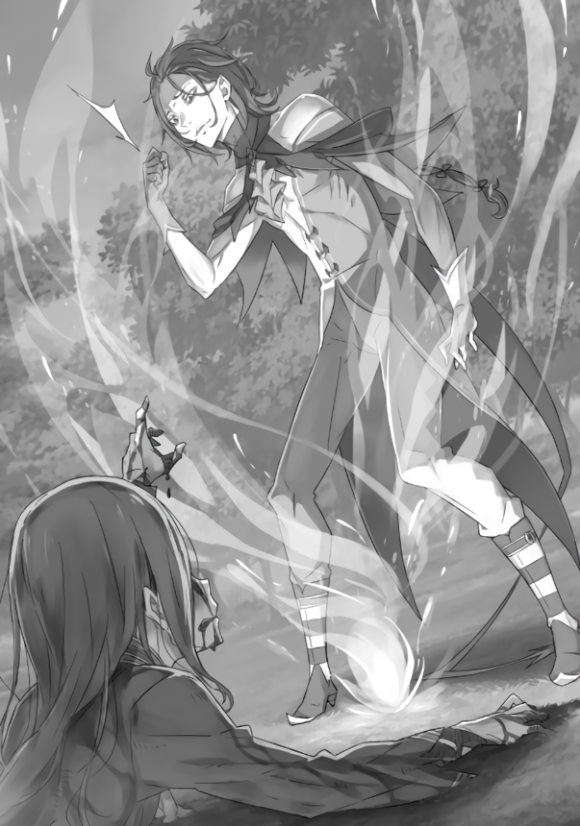

『艾力欧尔大森林的永久冻土』
——那个地方已经，变得让人想不起原来的样子了。
像是愤怒的大蛇暴走后留下的破坏痕迹。原来并排的树木全部被伐断，还有几棵树甚至被连根拔起猛烈地抛到了空中。
被震裂、掘出坑来的大地上也留下了若干深不见底的洞穴，地表被蹂躏得似乎要沉进地狱之中。
而这一切破坏，都是站在压倒般的暴力痕迹中心的，一个站着的人的所作所为。
脸上流淌着鲜血，上气不接下气地驱使着两腿保持站立的男人。在体内怀抱了超出自己承受能力的『大罪』，以生命为代价获得了力量的亵渎者。
珠斯——培提尔其乌斯・罗曼尼康帝。
「——」
大喘着气，脸色则是失去了血色的一片苍白。
但是，即使在这种状态下，珠斯比起最初的样子已经平静了下来。在他体内暴动的『什么』，似乎暂时把这不愉快的住所认可为落脚点了。
虽然刚才在骨头和皮肤的内侧随心所欲地折腾了一番，现在肉体的掌控权已经交还给了珠斯，作为房租，力量的精度和威力都在陡增。
充分发挥的权能，压倒性的破坏力。
谁都无法目睹的『不可视之手』的力量何其强大，能将手伸到手够不到的地方，能将手指触碰到无法触碰之处，以无法匹敌的力量将其毁灭。
在魔女教之中，作为稳健派的领袖，珠斯的力量远不及武斗派的过激派同僚。更不用说，如果和魔女教的最高战力，拥有独一无二的力量的『强欲』大罪司教，雷格鲁斯・柯尼亚斯作对，那相差就更为悬殊了。
现在珠斯好歹能和他对战，没有一瞬间被碾成肉末，也毫无疑问是吸入的魔女因子的功绩。
但是，珠斯完完全全拼上命的抵抗，
「这样……如何……嘚斯！」
充血的眼睛怒视着，珠斯抬起颤抖的手挤出了声音。
不可视之手带来了无情的，摧枯拉朽般集中暴力组成的风暴。而对手不断地被这样殴打，浓烟滚滚地被扬起的土灰所覆盖，
「啊，结束了？」
烟散去后，雷格鲁斯从中露出了脸，以一副无聊的神情用手指挖着耳朵。
胡乱掏着耳朵的他像是被从周围的惨状之中隔离了一般毫发无损。简直像是在破坏的景象产生之后再将他的存在插了进来。
「做到了这个地步……」
「你啊，也该注意到了吧。不同之处。我和你比起来，能力可是天差地别啊。你的适性也好你究竟变得多强了也好，这都算不上问题。谁都无法战胜我，连伤害我都做不到。就算你想要摄入魔女因子，再或者是带上龙还是剑圣来，都是没用的。」
「……这样的话，你倒是……奉陪了不少时间呢……」
「因为我没有急着去追的必要。你懂吧？我只是陪人过来的。要不是这样，我会费这么大力跑到这种地方来吗。我还想呆在家里被妻子们簇拥着安享和平呢。不过，我也差不多厌烦了。」
雷格鲁斯冷淡地回答了珠斯，慢慢地走向前来。
无忧无虑地走在地形都变了的森林里，直到降到了和珠斯一个水平面上，他轻轻地晃了晃举起的手。
像是赶虫子一样的手势，让珠斯为将要发生的什么摆开了架势。
呼唤着自己的体内，为黑色蠕动的东西献上血肉来获得力量。就这样，为了将涌出的力量打向雷格鲁斯而吸了口气，
珠斯的双手，从肩往下化为碎片飞了出去。
「什……！」
「无聊的反应。既然惹恼我了，也该让人看着愉悦点，在地上翻滚才是礼貌吧？嘛，真是白期待了呢。」
「哦，哦哦哦！」
被打飞的双手溅着鲜血在地上翻滚，从两肩往下失去双手的珠斯翻着白眼狂叫起来。
两肩的切断面肮脏至极，像是被野兽的牙齿咀嚼成了碎片一般留下了丑陋的伤痕。右手从肩开始完全消失不见，而左手则是从上臂正中断开。
后仰着身子，剧痛让珠斯猛烈地痉挛起来。
吐着血沫，因为太过疼痛而把牙齿都一个个咬碎了。失去力量的双腿跪了下来，珠斯的额头砸到了地上，脸上被绝望所覆盖。

「从结局上说，你的觉悟和决意，还有别的什么东西，也就是这么回事了。谁都是这样，不必在意。无论是谁，都无法怀抱超过自己能力限制的东西生存下去。只有被自己的狭小世界满足，在它内侧才能生存下去。合乎身份地。更别说你现在都失去了用来怀抱的双手……这更是自明之理吧。」
「啊啊！啊啊啊……」
「真的是，讨厌呢。我这样看着你如此痛苦，搞不好你会以为我是那种施虐于他人就会产生快感的人，那可是大错特错了，也是对我这个人格的莫大侮辱。我也不是想这么做才这么做的。我的人生呢，已经没有因为想做才去做的事了。被满足了的我，无论好坏，都不会受到任何人的影响了。无欲无求。内心满足。你没有怨恨我的权利。只是我的道路上，你挡在了前面而已。」
血喷出的势头减弱了，珠斯的叫声也逐渐变得细弱。
短促的呼吸声不断往复，吐着血沫蹲在地上的珠斯就像临死前的虫子一样痉挛着。
雷格鲁斯吐出的话，并没有恶意或是敌意。
那纯粹是说出了对他来说的事实，完全没有寄托感情的理由。雷格鲁斯是毫无遮掩地，真实地这么想的。
珠斯拼上性命的行动，对雷格鲁斯・柯尼亚斯来讲，都没有产生风吹动刘海的影响。
「说实话，真是扫兴。我还以为把我叫出来能有什么事……嘛，对我来说不扫兴的事倒是从未有过，但是既然被这样召来了，至少该让我看到值得我走这么远的路的东西吧。」
「很抱歉，雷格鲁斯司教。劳烦您前来，没能回应你的期待。」
雷格鲁斯仍在低头看着命不久矣的珠斯，至今为止旁观着战局的潘多拉只是这么答道。
她也是，在珠斯用不可视之手造成破坏，惨遭蹂躏的森林里，仍孑然处于最初的位置。
和雷格鲁斯一样，她的装束没有一丝变化。包裹着纤细形体的白布没有沾到任何土灰，保持着纯白，像是理所当然地，美丽的容貌也没有任何伤痕。
「并不是潘多拉大人的错。只是，森林里的家伙和稳健派的无能者都太差劲了。都是一群没有丝毫上进心的渣滓。和站在没有必要继续向上的高度的我不同，明明就是不挣扎求生就完蛋的凡人而已。拒绝满足自己的容器，对于『强欲』的我来说真是难以想象的欲望付钱呢。」
「就算所有人，都能像你这样思考，他们也并不是都能到达你这个地步呢。你比任何人都特别，为你自己而满足。完全化的你真是太美妙了。不过，不完全的他们也是很不错的。」
「单是讲道理的话还是饶了我吧。虽然能得到潘多拉大人的赞扬也不错，但我也不是要讨取赞赏。而且，没有必要把我和黑蛇都带来吧。潘多拉大人一个人，就能制服这个森林。」
现在仍在森林某处，散发着致命疫病的魔兽的存在。
雷格鲁斯为这样丑恶的满是恶意的存在心生厌恶，但他完全没有意识到在旁人看来他也应该为自己的扭曲受到同样待遇。
潘多拉只是用「嗯」地笑了笑，回答雷格鲁斯的话，
「只是剥夺抵抗力的话，这种意义上我一个人也是可以做到的。但是，那就没有意义了。我们，也绝对不是为了加害于森林里的住民们才到这里来的。」
「把杀尽一切的黑蛇都带到这里来，你还说这样的话吗？虽说你看起来的确没有加害的想法……那关于产生的被害，你也是把它当做无可奈何的事了吧。」
「为了伟大的目的，有生命牺牲那是必然的。但是，抗争如此残酷命运的气概也不会被忘却。那种心灵之美，是不能被否定的。」
「偏离要点了，不过听起来是为了目的而杀人的理论。哈哈哈。我觉得这么单纯的说法才是易于理解的好理论呢。比起让我白费脑筋浪费一整天来仔细考虑，还是要好得多呢。」
「这份爽快，我很中意哦。」
潘多拉心神荡漾的微笑，雷格鲁斯看了只是耸了耸肩。
然后他的视线重回奄奄一息的珠斯，准备对放手不管都不免殒命的他送上最后一击而迈开步来。
「嘛，反正你那身体死了你也不会死，不过把里面的东西拉出来掐住脖子才是利于管理的。虽然对于连脑袋都没有的家伙，脖子这种说法也是够奇怪的……」
抬起脚来，雷格鲁斯准备就这样踩下去踏碎珠斯的头颅。但是，在他打算这么做的瞬间，一个声音插了进来。
「阿尔・修玛！」
伴随着咏唱，世界发生了玛娜的变质，构成了物质。
随着空气爆裂的声音一同出现的是，能够覆盖上空那么巨型的强大冰块。因为树木倒下而变得容易仰望的整片天空里，形成了蓝白色的冰构成的地表。
「啊啊……真是的，这家伙也好那家伙也好……」
昂首望天，看着自己头上出现的浮冰大陆，雷格鲁斯咂了咂嘴。
「——」
剧震，以及无处可逃的冲击波，打倒了雷格鲁斯的身体。
已经不知道是第几次的爆炸气浪和地震，让只能称之为崩塌现场的森林地貌增加了破坏的痕迹。
碎裂的冰块四处皆是，还有从正上方被击碎的树木和岩石，被巨大的重量所压迫的地面，只是这一天里景色就翻天覆地了多少次呢。
白色冰屑还在半空中飞舞，世界也变得光怪陆离。
在这世界里，有一个银发的女性正拉着一个瘫软在地上的男性。
「珠斯！珠斯，振作点！这样……啊啊，怎么办才好……」
「菲尔、托娜，大人……吗……」
回应着福尔图娜的呼唤，命悬一线的珠斯的眼睛中重新亮起微弱的光芒。
虽然生命仍是千钧一发，但好歹恢复了意识的珠斯让回来的福尔图娜几度点头。
「是，是，是啊。是我。珠斯，怎么变成这样……」
「没事，的，嘚斯……肉身，总有一天会腐朽……相信着我，托付于我的，指尖们，也一定能明白……比起这个，爱蜜莉娅大人……」
「交给值得信赖的孩子，逃到了森林外去了。一定，没事的。」
「这样吗……那，就太好了，嘚斯……」
「——完全，不好吧！」
染上血色的珠斯松缓了神情，然而激动的雷格鲁斯高声说道。
被冰覆盖的地面顿时爆裂，受到如此大重量袭击的雷格鲁斯表情满是愤怒。他捋起刘海，眼瞳里清晰地寄宿着敌意。
「刚想着你回来了，没想到突然就这么闹，你以为你是谁啊？刚才，我正要踩烂这个家伙呢，我啊！你有什么权利，受谁允许，来妨碍我我我我我我我我我我我我我我我我我我我我！」
像是大为震怒地叫着，蹲着的雷格鲁斯双手撑地。然后随着他举起手的动作，尘土飞扬，柔软的土像福尔图娜和珠斯二人飞去。
话说，飞散的尘土也并非大量。就像是孩子们在沙坑扬沙，那么拙劣幼稚的愤怒表现。
福尔图娜抬头看着雷格鲁斯散落的泥土，无视其影响立即准备反击，汇聚起了魔力。
然而，
「不行！！那些泥……不全部躲开的话……」
「诶？……」
珠斯头顶倒了福尔图娜，中断了她的吟唱。这样以无防备的姿态倒在地上翻滚的两人，又被珠斯使出了浑身的力气用不可视之手抛到了后方。
不是抵抗飞来的泥土，也不是做好防御，而是选择了不做好保护姿势就在地上翻滚。
福尔图娜一瞬间，想要出声问珠斯的判断是什么意思，然后她看到了。
雷格鲁斯掷出的泥土和石头的碎屑落到地面的一瞬间，大量的雨滴发出了打在屋顶上那样的声响，留下了『地上无数的小洞』。
虽然小洞一个个只有沙粒那样大，但其密度和贯穿力才是问题所在。
以将地面几乎挖穿作为结果的谜之攻击，在一棵勉强维持了原形的倾倒的树上留下了巨大的威力。
最后，差不多福尔图娜能环抱那么粗的树干，被贯穿了无数细小的洞，完完全全地化为了粉尘飘散。
如果吃下那么一次攻击，人体之类的在一瞬间化为血烟也并不难想象。
比起这个更恐怖的是，
「你们，在躲什么啊！好好被打中，化成肉片，变成虫的饵食才好。培提尔其乌斯这混蛋，还有那女人一起。本来还想把你纳为第七十九个妻子，却对我干这种蠢事……！」
雷格鲁斯再次，同样地把手伸向地面。
最为恐怖的是，能带来那种程度破坏的动作，对他来说只是挖一把土而已——只是费点力气，如同儿戏的行为罢了。
激动地大肆使用着破坏之力的雷格鲁斯之身，受到福尔图娜浑身之力的奇袭也没有发生任何变化。太异常了，只能这么评价。
无论攻防，雷格鲁斯・柯尼亚斯都发挥着超乎寻常的力量。尽管拥有着这般力量，但这力量却如此随性，被束缚在寄宿着如此幼稚心智的肉体之中。
顺着心情就会把矛头指向任何人的没教养的孩子，却被赋予了龙那样的力量，不得不说是危险的存在——福尔图娜这么判断面前的怪物。
「不想变成肉片的话，就拧下你的四肢来做装饰好了！把我……『强欲』惹恼，就好好让你后悔吧！」
「请稍等，雷格鲁斯司教。」
雷格鲁斯还想让珠斯和福尔图娜二人再度受到泥土散弹的攻击，背后的潘多拉的声音制止了他。
手还伸在地上，雷格鲁斯只是转了头看向潘多拉。他的表情上的怒意只增不减，即使对于当做上司的潘多拉也没有善罢甘休的态势。
「……怎么了，潘多拉大人。我现在，正因为权利遭受侵害而自心底气得发抖。对这样的我，你有何贵干？你有什么打算，要阻止我？注意你的言辞，马上，回答我……」
「收起你的愤怒吧，雷格鲁斯司教。我不允许你在这里杀害他们。你看着那两人，难道内心没有什么触动吗？」
「你看我现在的样子，看上去像是没有触动吗？——别因为我对你恭敬，就得意忘形了，女人！」
与雷格鲁斯的嫉妒，珠斯的状况，福尔图娜的决意，和所有一切都有温度差的，潘多拉的话语，遭受到了雷格鲁斯的愤怒。
像是忘记两个人的同伴关系，雷格鲁斯将抓在地上的手向潘多拉扬去。土的散弹飞出，粉碎了途中的树木，奔向悠然自得的潘多拉。正中目标，少女的身体化为了无数的血肉碎片飞散。
「……骗人的吧。」
毫无防备地受到散弹攻击，潘多拉四散的形态让福尔图娜不由得呆呆地自言自语。因为她看到自己忌恨的对手，因为内讧而死成那种惨状。
还以为潘多拉有轻易接下雷格鲁斯攻击的王牌，然而变成了红色肉片的潘多拉散落在森林的大地上，化为了粗糙地面的肥料。
「对我说这种蠢话，就是这种下场。为什么谁都做不到那么理所当然地明事理呢？别妨碍我。别阻断我的道路。别对我的行为说三道四。别对我做的事提出反对。我就拜托你们做了那么难的事吗？呐，你们对此怎么想？」
杀害了潘多拉，眼中闪着灰暗光芒的雷格鲁斯向两人转过身去。
现在还不是为单纯地减少了一个敌人而喜悦的场合。就算对手从两个减少到了一个，只要那个人是绝对的强者，形势就没有任何变化。
在奇袭时，福尔图娜已经将自己所拥有的最大威力打向了雷格鲁斯。
即使受到这么一击，雷格鲁斯别说受伤，连衣服褶皱都没出现。虽有不甘，但福尔图娜不可能打败雷格鲁斯。
而且珠斯也已经被破坏肉体到这个地步，处于巨大的劣势之中。即使强求濒死的他，让他能站起来，战斗还是那么一边倒。
剩下的只有，让雷格鲁斯的怒意集中于他们，为爱女逃跑争取时间。
「这里，交给我……福尔图娜，大人……」
「珠斯，你……」
福尔图娜对在自己怀里试图起身的珠斯勉力笑了笑。
在这种时候，还能做出笑容的自己多少有些不可思议，值得骄傲。
「把你丢在这里，我自己逃走吗？要是这样的话，我就不会回来了。都和爱蜜莉娅分别了回到了这里，还要让我再逃走吗？」
「但是……这样的话，为什么，要回来……我……」
「为了不让你死。要是你死了的话，我也要在你身边。」
被福尔图娜紫绀色的眼瞳注视，珠斯睁开被血染湿的眼睛。
抱着失去了双手而变得轻多了的珠斯，福尔图娜以能感受到彼此呼吸的距离告诉他。

「在你不存在的世界里，在你不会回来的森林里，我还能等待什么呢？没有你存在的漫长时间里，弱小的我是不能活下去的。」
「你，才不是弱小……」
「很弱小哦。只是在你和爱蜜莉娅面去，逞着强而已。」
福尔图娜有种一吐为快的感觉，把珠斯的身体抱了起来。
颤抖的珠斯借福尔图娜的身体站了起来，她则是靠着这样的珠斯牢牢地支撑着他。
看着互相抱着站着的男女，雷格鲁斯的脸露出了打心底的不快。
「无视我的质问那么久，你们还挺火热的嘛。到底，怎么了嘛。发生了什么嘛。让你们看到了如此大的实力差距，我还这么明白易懂地展示给了你们看，为什么你们还是要重复做着『别做』的事呢，你们究竟，在想什么？」
「真是个啰啰嗦嗦不停的男人啊。我们如此表明了态度你也该明白了吧。劳烦你细心讲解，我们的回答只有一个。」
「是啊，嘚斯。」
福尔图娜和珠斯交换了下眼神，一齐对激动着的雷格鲁斯说道。
「——谁管你呢，蠢货。」
声音重合，附带着福尔图娜还竖起了中指。
齐声怒斥之后，福尔图娜和珠斯两人都开始聚集体内的力量。
然后，被当头棒喝的雷格鲁斯涨红了脸大怒道，
「……！！太好了！就让你们两个人一起，变成分不出区别的血块，喂给黑蛇肮脏的嘴里——」
「我说了，让你稍等，雷格鲁斯司教。」
第三次，雷格鲁斯・柯尼亚斯的意图遭受到了妨碍。
自上而来，潘多拉的手按住雷格鲁斯的头，然后他的身体就毫无抵抗地陷进了地里。从脚到下巴都在一瞬间被埋进土里的雷格鲁斯，从下往上看着降在他旁边的潘多拉。
「几次，几次都……!」
「如果有必要挫败你的企图，我就会这么做。大体上到现在为止，把你带来的目的也达到了。现在，你可以回去了哦。」
「把我带来，你满足了就让我回去？谁会听从这样的话。直到我消除我的怒意，回到原来的我的样子，绝对……」
「这样啊。那就由我来吧。『雷格鲁斯司教，不应该处在这里。他正在自己的家里，被妻子们环绕着。』」
「等——」
下一个瞬间，想要叫出什么的雷格鲁斯就忽然失去了身影。
不是完全被埋进了地面。真的就是忽然从那个地方消失了。他应该在的地方，都没有留下他的身体印下的痕迹。
简直就是在肯定潘多拉说的『不应该处在这里』。
「烦人的那位也被离场了，能静下心来对话了呢。」
「……在这之前，能问个问题吗？你为什么会在这里？我这双眼睛清清楚楚地看到，你应该死了才对啊。」
像是理所当然地，潘多拉伫立在那里。
她浮现出平和的笑容，那份笑容应该早变成了肉片飞散了。看着刚才残骸飞溅的这个人，福尔图娜微微倒吸了口气。
原本被红黑色肉片点缀的地方，也完全没有了那副景象。就和消失的雷格鲁斯一样，她的尸体也消失了。
福尔图娜说不出话，潘多拉只是歪着头。
「说不定……是不是『看错什么了』呢？」
「——！」
潘多拉的说法让福尔图娜一颤。
明明是不可能的，但世界就是要证明潘多拉的话一样，顺从她的话变换了形态。自己确切见过的景象也被否定，被不为之所知的景象覆盖，就是这样的异常事态。
尸体消失了，潘多拉复活了。雷格鲁斯消失了，雷格鲁斯存在的痕迹也消失了。
注意到这点的一瞬间，福尔图娜扭头一看，更令人惊奇的事态的发生让她几乎发出了悲鸣。
站在边上的珠斯的双手，原本应该化为碎片的双手，恢复成了原样。
「雷格鲁斯司教既然都不在了，那他行动的结果也会消失不见。很简单的道理哦。而且，治疗培提尔其乌斯司教的伤，也是我的一份厚意的说。」
福尔图娜和珠斯喉咙像是被堵住一样说不出话，潘多拉只是淡淡地说明道。
珠斯为了确认自己的手恢复到了原样，试着挥舞了一下，福尔图娜以颤抖的眼瞳看着他，
「珠，珠斯，你的手……」
「能正常地，动，嘚斯。身体也……除了里面，都没事了……」
「你摄入因子这件事我就没有改写了呢。我想称赞你的那个行动，和为了你而折回的她的行动而已。这件事，就请当做是为了证明这一点而由我奉上的诚意吧。」
尽管是十分显然的异常状况，潘多拉仍然保持着平常的态度继续说道。
对福尔图娜来说，潘多拉的存在是令人憎恶的对象。这点不会改变，看到她的瞬间自己就会遏制不住地愤怒起来也是没错的。
但是，福尔图娜却没有想过自己竟然如此不知这个对手的真实面目。
被做了什么，无法想象。发生了什么，无法理解。
今天，在这森林里发生的一件件事，所有都超乎福尔图娜的想象。唯一明白的，就是无法理解的这些事，正在为一切画上句号。
「福尔图娜大人，请清醒一下！」
不断堆叠的连续惊愕下，福尔图娜几乎停滞的思考被一喝惊醒。
因脸颊被打的疼痛眨了眨眼，面前珠斯正看着自己。他抓住自己的肩膀，
「也许会有疑问吧。也许会有不解吧。但是，现在不得不将它们抛之脑后嘚斯。重要的是，保护森林，和爱蜜莉娅大人嘚斯。然后……这些，只要打到那个女人就可以实现了嘚斯！」
「——珠斯」
他的叫喊让福尔图娜的眼神里的力量复苏，她开始盯着潘多拉。
是的，正如他所说。的确是能力不明的对手，不知道她会对自己做些什么也是让人心生恐怖。但是，潘多拉为了方便自己的行动，让作为战力的雷格鲁斯从此处消失，还让珠斯失去的双手复原了。
削弱己方战力，还回复对方战力是愚蠢的行为。作为结果，她正将自己逼到绝路，却还没有发现也说不定。
「就像珠斯所说的呢。刚才发生了什么之后再说。现在！」
「齐心协力，打到她嘚斯！只要能击退她，森林里的其他魔女教也会撤退嘚斯。——爱蜜莉娅大人，就能得救嘚斯！」
珠斯的话让福尔图娜脑内闪过了爱女的身影。
方才立下了今生也许就此离别的觉悟。实际上，到刚才为止也是以这份觉悟进行着战斗。然而，现在却看到了新的希望。
拯救爱蜜莉娅。无他，正是以自己和珠斯的力量。
「——白色凝结，封禁时间律动的纯冰魔手。」
原本该打倒雷格鲁斯的魔力正寻求着爆发的契机，现在也在福尔图娜体内回旋。赋予那份力量形状，赐予其锐利的尖端，利用咏唱，魔法正在干涉世界。
世界撕裂的声音中产生的，是尖端极为尖锐的一根冰柱——甚至要好几个巨人才能抬起的，冰枪。
其尖端指向了潘多拉。射出的冰枪如果能直击目标，少女的身体就会四散，连肉片一起冻结，都不会给她复活的机会。
福尔图娜身边，双手抱着她的肩膀的珠斯也迸发着压力。
破烂的法衣之下力量开始狂乱地涌动，复原的手以外，伤口开始再次出血。即使变成了如此痛苦的姿态，这个男人仍然为了自己坚信的事物要烧尽灵魂。
在两人展现出力量之时，面前的潘多拉依然没有摆出应对的架势，只是笑道，
「啊，那就来吧。——带上最极致的觉悟，让我好好品味一下吧。」
为了撕裂这个笑容，两人的力量震颤了整个世界。
然后——
在洼地醒来的爱蜜莉娅摇了摇头，茫然地环视了四周，终于想起了自己到底是在哪。
「这样啊……我……」
浑身脏兮兮的自己并没有见过的景色。擦破的膝盖，和走得太久而酸痛的脚。
爱蜜莉娅恢复了意识，勒紧内心的焦躁感和苏醒的记忆都告诉她这不是假象也并非梦境。
「妈妈……珠斯……阿奇……」
为了让自己逃到什么地方，而拼了命的人们。
一个个人的脸浮现出来，爱蜜莉娅想起了自己必须要做些什么。而想要保护爱蜜莉娅的大家，则让自己赶快逃离。
让自己直直地穿出森林，逃到森林之外。
但是，爱蜜莉娅还有别的想法。
自己，也应该能为大家做些什么。
「啊，封印……封印……」
封印，这个单词将爱蜜莉娅落入洼地之前的记忆扯了出来。
福尔图娜一脸严肃地和阿奇说的话。说是来到森林的可怕人们，都是为了森林的封印。
森林的封印，是爱蜜莉娅她们生活的村落的深处又深处，再深处的一扇奇妙的门。没有连接到任何地方，只是在森林里独立着的像是铁质的门。
大人们称之为封印的场所，爱蜜莉娅是知道的。
「不去怎么行……我……」
就算赶到了那里，小爱蜜莉娅也做不到什么。
爱蜜莉娅既不知道开门的方法，更何况她连封印这个单词是什么意思都不怎么了解。只是，有什么很重要的东西在那里，而且自己知道那个地方——知道这些对现在爱蜜莉娅就足够了。
不是因为能做到什么，而驱动了少女的身体。
而是，到了那里就会有改变的希望，这样的想法推动了她。
「去封印的场所……但是，是哪边……」
和珠斯告别之后嚎啕大哭，被福尔图娜抱着簌簌流泪，被阿奇抱着在森林里穿行，然后又独自在未知的地方不断走着。
这个地方，即使是爱蜜莉娅久住的森林，也不是为爱蜜莉娅所知的森林了。她当做庭园一样转悠的地方只不过是村落的周边而已。别说封印所在的地方，就是分别的母亲和珠斯所在之处，现在的爱蜜莉娅都没有了头绪。
「呜……呼……」
为自己的不争气和无力，小爱蜜莉娅呜咽了起来。
明明找到了必须要做的事，却没有做它的力量。在烦恼时能依靠的妈妈也不在这里。无他，自己正是因为要救妈妈而不得不行动起来。
「——嗯？」
爱蜜莉娅这样执着而拼命的心情，让守护着她的超常存在动了起来。
用手擦了擦流出的眼泪，爱蜜莉娅忽然看到自己面前几束光芒闪过而眨了眨眼。抬起头来，她看到了横穿视野的几抹光芒。
「妖精，先生……」
爱蜜莉娅呼唤着妖精，那是被福尔图娜和珠斯称为精灵的超凡存在。
原本应该没有言语和意志的微精灵们，正回应着幼小少女的竭力祈愿。
在因惊讶而僵直的爱蜜莉娅面前，微精灵像是跳着舞蹈一样地盘旋。然后又似乎是在指出一个方向地来回飞舞。
爱蜜莉娅见状，注意到了微精灵的意图而声音有些发抖，
「会告诉我，吗……？」
没有回答。但是微精灵肯定般地上下摇动着光芒。
「去那里的话，就有封印吗？妈妈和大家，就能得救吗……？」
微精灵强烈闪灭。
看到那蓝白色的光芒，爱蜜莉娅用袖子擦了擦眼泪摇了摇头。
不是在这种地方继续抽抽搭搭的时候了。
被妈妈和珠斯还有各种各样的人帮助，还在这里哭个不停，连妖精都来鼓励自己了。在这样蹲在原地止步不前，自己都不能原谅自己了。
「嗯……嗯，嗯。」
微精灵为了确认爱蜜莉娅的状况而摇曳着。爱蜜莉娅颔首回应，晃着小小的身体跑了起来。跟随着微精灵的指引，使出全力踏着崎岖的地面。
穿过洼地，攀上斜坡，纤小的身体穿过树木间狭窄的缝隙。
但是也有不少微精灵能通过的路径，爱蜜莉娅却过不去。跌跌撞撞地，被树枝划到脸颊，摔倒在地啃了一口土——然而她吐出了泥块就立马站了起来。
喘着气，感到痛苦和恐惧，泪水就又开始打转了。
吸着鼻涕，用满是泥的袖子擦了擦眼泪，拍打下蹭破皮的膝盖继续跑了起来。
忍受着痛苦，竭力奔跑的爱蜜莉娅脑中浮现出了记忆。
自从她懂事开始，爱蜜莉娅就在这森林里，这村落里度过了时光。
福尔图娜是个严厉的妈妈，绝对不会溺爱爱蜜莉娅。她说自己不是真正的妈妈。爱蜜莉娅有她真正的父母。
福尔图娜像是口头禅一样反反复复地这么说着，爱蜜莉娅将信将疑。自己有真正的双亲。这很令人高兴。但是，福尔图娜也是真正的母亲。对爱蜜莉娅来说，那是不可推翻的事实。这一点，在今天的经历里她确确实实地明白了。
还记得被训斥的日子。还记得她抱着哭着道歉的爱蜜莉娅，一起睡着的夜晚。为了不让醒来的爱蜜莉娅感到寂寞，直到爱蜜莉娅醒来，一直在床上抚摸着自己的脑袋，这爱蜜莉娅也是知道的。
被妈妈如此爱着，这一点爱蜜莉娅比任何人都清楚。
村落的大伙，也对自己很温柔。
虽然感觉他们会远远避开自己，也会因为一些特别的对待让自己不知所措，一直有这样的生疏感。但是大家从来没有说出过伤害爱蜜莉娅的话，而他们更是亲切地对待着保护爱蜜莉娅的福尔图娜。
爱蜜莉娅知道，在那个公主房间里，为了让她生活舒适，大家也是想尽了办法。为了让闭门不出的爱蜜莉娅不那么孤单，他们准备了玩具，给自己亲手做了好多玩偶。日复一日增加的人偶，已经是爱蜜莉娅用双手双脚都数不过来的程度了。
那些人偶的数量，其中的一针一线，都是他们对爱蜜莉娅关爱的证明。
而珠斯，爱蜜莉娅一开始是很讨厌的。
自己被隔离，关在公主房间之后珠斯他们才到了这里，大人们一定躲着自己干什么开心的事情了。第一次跑出公主房间，第一次目击到珠斯和福尔图娜他们在一起，福尔图娜的笑容让爱蜜莉娅不禁嫉恨起了珠斯。
觉得不可原谅。但是，他看到了偶然遇到的爱蜜莉娅之后，却流了泪。哭着哭着，看上去那么高兴地哭着，爱蜜莉娅就不自觉地原谅了他。
因为，那泪水是那么温暖。回想起了被福尔图娜抱着的时候的平静，爱蜜莉娅摸了摸珠斯的头。他流着欣喜的泪水，为了让他停止哭泣时不感到孤单，爱蜜莉娅陪在了他身边。真没办法，那时候自己是这样想的。
唉，那就没办法了，只是这样想的。
「我……还能……和大家……」
想和福尔图娜，再睡在一张床上。
想要在公主房间里，好好地招待大家。
自以为是地想要保护爱蜜莉娅的珠斯，这次可要狠狠地踩他一脚。
所以，还想和大家相见。
「我，会成为一个好孩子的……」
然后，视野被泪水模糊，不知穿过了多少树木——爱蜜莉娅找到了追寻的封印之门。
「欢迎，来到这里。」
白金色头发的少女，在门前对爱蜜莉娅欢迎似的张开了双手。
「太好了。你能自己来到这里。我好不容易找到了封印，但却不知道重要的钥匙在哪里。但是，能平安找到真是让我安心了。」
「为什么……你会在这里……？」
亲切地问候自己的少女——潘多拉异样的压迫感，让爱蜜莉娅颤抖着喉咙发出了疑问。听罢，潘多拉轻轻拍了拍手。
「呼呼，很惊奇呢。很简单哦。因为这个封印对我来说十分重要。所以一直以来，我都在寻找它的下落。这也是，我今天会来到这个森林的理由。所以，我会出现在这里是必然的哦。」
「……」
潘多拉的回答，和爱蜜莉娅想要的回答不同。
爱蜜莉娅想问的是，潘多拉是怎么到这里来的。依爱蜜莉娅最后所见，她和雷格鲁斯都应该被珠斯拦住了去路。
而她能走到这里来，就意味着珠斯拼了命的抵抗……
「为什么……会在这里……？」
所以，爱蜜莉娅不想接受这个事实，又问了一遍。
不知道是不是注意到了爱蜜莉娅的心碎，潘多拉张大了眼睛，然后像是反省一样地把手放在胸口。
「真是抱歉。我，的回答有些奇怪呢。你想问的明明不是我，而是培提尔其乌斯司教和令堂的情况呢。」
「……」
潘多拉迟来的理解，却正确地触到了爱蜜莉娅的意图。
如果她继续误解下去的话，至少爱蜜莉娅就可以不必知道自己所问的答案。爱蜜莉娅想问什么，她自己也快要不明白了。
看出了爱蜜莉娅的矛盾，潘多拉温婉一笑。
笑容中没有任何邪念和恶毒，只是单纯地充满了想要排除爱蜜莉娅所持忧虑的心意。
「请安心。你担心的培提尔其乌斯司教和你的母亲，都没有出什么意外哦。」
「诶……？」
「不用这么担心。你如果一开始这么问就好了。我和我的信徒们，都不是为了加害于诸位才来到这个森林的。和之前我陈述的一样，只是有求于封印才来拜访。因此，我等也没有愚笨到去引发不必要的牺牲。」
潘多拉的话语温和地劝说着爱蜜莉娅，让爱蜜莉娅心中的巨石忽然落地。
如果相信她的话，福尔图娜和珠斯就是平安的。森林里的大伙，也许没有变得自己想象中那么凄惨。
不过她刚才说了，自己找这个封印有事。也就是说，如果封印的事也了结了——
「封印的事结束之后，你就会回去吗……？」
「……」
「封、封印的事情完成之后，你就会离开森林吗？不对大家下毒手，就会回去吗？」
「——啊啊，当然了。不必要的牺牲，也不是我所期望的呢。」
潘多拉像是约定般地点了点头，回应了爱蜜莉娅笨拙的诉说。
然后潘多拉指向了封印的门，歪着头对差点落泪的爱蜜莉娅说道。
「所以，请把钥匙交与我吧。只要打开了这扇封印的门，我们就会立即从森林里撤退。」
「钥匙……？」
「是的。钥匙。这个封印，是以门的形式存在的，没有钥匙就不能打开。而且那把钥匙，应该是由你持有的哦。」
「这种事，我并不知道……」
爱蜜莉娅摇着头否定潘多拉的断言。
实际上，她并不记得潘多拉追问中的事。爱蜜莉娅不记得被谁给过钥匙一样的东西，而且这个封印本身，就是在村里秘密地没有告诉爱蜜莉娅。
连封印的存在都被保密，爱蜜莉娅自然没有持有钥匙的理由。这是想都不用想的自然推断。
没有头绪的爱蜜莉娅还是摇着头。
爱蜜莉娅的回答则让潘多拉也开始摇头。
「没有必要隐瞒哦。」
「不，不是的……真的，我真的不知道！钥匙什么的，不在我这里！也没有人给过我！我，打不开这个叫封印的东西！」
「这样啊。——那么，为了找到钥匙，不得不把森林翻个底朝天了呢。」
爱蜜莉娅的回应让潘多拉露出了十分沉痛的神情，低下了视线。
那种态度和言行虽然对爱蜜莉娅抱有同情，但也暗含着要将说出的话绝对地实行下去的强硬意志，让爱蜜莉娅不禁颤抖。
现在在这里，要是打不开门的封印，这个少女就要翻掘整个森林。
翻掘，这个词，则是显而易见的伪装。潘多拉是要把整个森林，还有住在森林的人们，妈妈和村里的所有人，珠斯他们一点不留地翻找个遍吧。
潘多拉拥有这么做的力量，幼小的爱蜜莉娅也清楚知道。
那是，异常的存在。
她甚至都确信，对爱蜜莉娅来说是强力的象征的福尔图娜都敌不过这个存在。
「我，我会开的！我来打开！」
所以爱蜜莉娅为了让潘多拉不付诸心动而大声地喊了起来。
听到了爱蜜莉娅的回答，潘多拉忽然神色好转。
「真的吗？太好了。果然，钥匙是在你这里呢。我就知道是这样的。因为，你怎么看都是魔女的女儿。」
「魔、女，的……？」
「啊啊，是的。那么，封印就拜托了。让我们仔细检视一下门里的状况，我们就会马上离开的哦。」
潘多拉为爱蜜莉娅让开了路，满脸喜色地等待着爱蜜莉娅的行动。
虽然被潘多拉说出的词扰得心神不宁，无法后退的爱蜜莉娅还是向前走了一步。爱蜜莉娅抬头看着封印的门，但再怎么看都望不到边。
可以说是为了让比巨人更大的巨人通过而铸造的巨大的的门，面前的渺小的少女还不得不将其打开，好似痴人说梦。
「……」
站在门前。那么站着还好，但爱蜜莉娅仍然对如何打开门没有头绪。
之前确认了封印场所的时候，爱蜜莉娅还是大致对这扇门进行了一番动作的。推也好拉也好，爬上爬下也好都早已经试过了。
陈旧的门对爱蜜莉娅小小的身体毫无反应，别说开门，就连嘎吱声都没有，就那样纹丝不动。
今天，也是这样。
伸出手碰了碰，门也没有一丝一毫动的迹象。
「哈……哈……，哈……啊……」
心跳反常地加快，脑中血液流过的声音也缓缓响了起来。
胸口发热，跳动的心脏像是要从口中一跃而出。然而爱蜜莉娅的手脚却是冰凉，四肢前端就像灌了铅一样沉重。
不得不动起来，却动不了。
不打开这个的话，大家就会陷入惨境。
明明知道这一点，但什么都做不了。
因恐怖和绝望，爱蜜莉娅的脑内一片空白，掩盖了被称为爱蜜莉娅的存在。
「——自己才是钥匙，请你这么想。」
那声音是如此滑溜，倏然钻进了寻求着帮助的爱蜜莉娅的耳朵。
——我是，钥匙。
遵从声音的指示，爱蜜莉娅心中描绘出了这样的景象。
那一瞬间，爱蜜莉娅触碰着门的手上感到了重量。看向手。手上，银色古旧的巨大钥匙，已经被自己紧紧握住了。
「钥匙……」
「能看到了吗？那样的话，果然你是钥匙呢。」
听到爱蜜莉娅的自言自语，潘多拉欣喜地指出。
不过，这话多少有些不自然。好像对于潘多拉来说，爱蜜莉娅手里的钥匙是不可见的一样。
「你，看不见这个……？」
「——。是的，我看不见。那个钥匙只会依托于有资格者之手。能打开锁的人，这世上也一定只有两个人了吧。」
话中透着羡慕的潘多拉。她的视线的确正看向爱蜜莉娅的手，但并没有看见钥匙。看不见这能感到重量的钥匙到底是怎么回事，爱蜜莉娅不明白之余也将钥匙握在手里转向了门。
发现了的钥匙——但是，门上却没有可以当做钥匙孔的东西。
连把手都没有的门。虽然是很大的钥匙，但和这巨大的门相比也是小得多了。这么陈旧的钥匙，真的能打开这扇门吗。
「——啊。」
然而，爱蜜莉娅却本能地明白了该如何使用这把钥匙。
没有找钥匙孔的必要。这扇门本身，就是类似钥匙孔的存在。
这扇门，并不是加了封印的门。
它只是作为封印的盖子。不是这扇门被封印了。封印是更没有形状的，在这门内侧施加的东西。
「那么，就请打开吧。」
潘多拉的要求让爱蜜莉娅咽了口气，然后向前走了一步。
只要把手里的钥匙按在门上，怀着「打开」的念头拧一下，门就会打开了。这样的话，长久以来这扇门也将从封印的使命中被解放。
——打开这扇门的话，大家就会得救。
「……怎么了？」
但是，正在爱蜜莉娅要把钥匙贴在门上之前，爱蜜莉娅伸出去的手却停了下来。
看到颤抖的指尖停止了动作，潘多拉微微皱了皱眉。
只要这样把钥匙按在门上，封印就会解开。
但是——、
「爱蜜莉娅。——约定。」
爱蜜莉娅脑海中回荡的，是分别之际母亲低声私语的话。
那是，确立了和这个封印毫无关系的约定之时的话语。
但是爱蜜莉娅记得。自己要遵守约定，以及自己和母亲约定过的事。
不知道封印的事。不可以知道。
爱蜜莉娅不知道这个地方，更不能加以干涉。
那是和福尔图娜约定的。然后，遵守约定比起一切都要优先。这么做是背叛别人的信任，是不可以的。
如果变成坏孩子的话，谁都不会原谅爱蜜莉娅了。会变得不可原谅。
所以，打开封印，是不可以的。
「开，开不了……」
「——为什么呢？」
「约定……有约定。封印的事，我是不知道的。打开，也不行。」
「这样啊。约定是很重要的事呢。你想要遵守约定的心情，我觉得是很伟大和重要的。但是……这也要依情况而定。」
爱蜜莉娅否定着摇着头，潘多拉则是试图说服她而对上了视线。潘多拉双手轻抚紧握着钥匙的爱蜜莉娅的银发，
「那个约定，是和你母亲立下的吗。你的母亲，也是个很伟大的人呢。教给了你那么正确，宝贵的事。那份心意也是该守护的重要之物。」
「那，那样的话……」
「但是，有时即使违反约定也需要做出决断。也许对于尚幼的你强求做出决断有些严苛。但是一味地被迫做出决断，命运就会受人摆布，你能不能以此为戒呢。在起伏的自己身上爱上抗争，对其结果抱有希望，这才是命运。你，是想要哪一边的希望呢？」
「哪边的，希望……」
爱蜜莉娅小声说道，潘多拉则是「啊啊」地以慈母般的微笑点头。
她将双手展示在爱蜜莉娅面前，
「一个是，遵守与你母亲立下的约定，不打开封印与我僵持，然后试图渡过这一苦难的希望。」
举起右手，潘多拉的动作像是托着看不见的希望。
「然后另一个是，违反与你母亲的约定，打开封印，我们的愿望满足之后就不会发生进一步的被害，事态也得到收束的希望。」
举起左手，潘多拉同样地将不可见的希望展示给爱蜜莉娅看。
「——」
看着面前的双手，爱蜜莉娅无言地僵直起来。
连呼吸，都因为肺像是被冻了起来而无法意识到。自己要是糊里糊涂地说出什么的话，潘多拉也许就会收回双手吧。
给出的两个希望——如果爱蜜莉娅哪个都不能接受，那它们就会在爱蜜莉娅面前被收走吧。
——这样的恐怖，紧紧抓住了幼小少女的心。
「选择，哪个希望呢。——这个决定交给你了。」
右边的希望。左边的希望。
选择打破约定的希望。选择遵守约定的希望。
潘多拉甜甜地荡漾的声音引诱着。
菲尔托胺温柔地训诫的声音在呼唤着。
连那么迅速地跳动着的心脏都听不见声音了。
世界之中声音消失不见，爱蜜莉娅被遗弃在这个颜色都褪去的世界里。
思考，烦恼。思考变得灼热，脑内变得沸腾。
身体的全部力量都集中到了脑部，几乎都有了脑以下的部分全部死去了的错觉。作为证据，心脏的跳动已经听不见了，手脚也断绝了意识，纹丝不动。
选不了。选不了，选不了选不了选不了选不了选不了选不了。
选哪边大家才能获救？选哪边才能帮到大家？
做什么才能让自己成为大家的助力？做什么才好，有谁快告诉我吧。
「——啊。」
「这样啊。那是，你自己的决断呢。」
思考陷于白热化，视野都变得白蒙蒙的爱蜜莉娅漏出了微弱的声音。
看到了她选择的答案，潘多拉长长的睫毛装饰的眼睛向下撇了视线。
——爱蜜莉娅的手，碰到了潘多拉的右手。
不打破约定。不打开封印。选择了祈求大家能够获救的道路。
「要，遵守，和，妈妈……做出的……约定……所以……妈妈……」
「到最后的最后，都相信着作为自己准则的母亲。矛盾的终点得到的那个答案，也是你这个生命引出的结果。那就予以尊重吧。」
滚滚落泪的爱蜜莉娅面前，潘多拉一副理解的神情，点了点头。
然后她拿开爱蜜莉娅碰着自己右手的手，以慈祥的目光看着崩溃的少女。
要是潘多拉想这么做，她完全可以把握有钥匙的，爱蜜莉娅的手推到门上。
本来，这种强迫行为下爱蜜莉娅是否有着『打开门』的意志虽说是另一回事，但不可否认的是，如果让爱蜜莉娅在这之后再得出结论，这一动作就可能成为对她的决定性打击。即使明白这一点，潘多拉也不会这么做吧。
只有这一点，在这个一切异常的少女身上，是确实能够相信的。
但是
「所以说。」
「诶……？」
「为了封印而谋求手段，我的决断，也请你尊重呢。」
潘多拉的话让爱蜜莉娅茫然地抬起了头。
面前的潘多拉没有看着爱蜜莉娅。她的视线看向了彼此的身后。爱蜜莉娅顺着她的目光看向那里，有一个正拨开着树木和草丛冲出来的身影。
那是，一个银色短发的女性。
「潘多拉——！」
全身浴血地跃出的是，福尔图娜。
和分别之时相比，母亲的身上满身疮痍。但是，爱蜜莉娅刚才还想着也许不能与她相会了，她还活着也让爱蜜莉娅稍稍有些心安。
「接招吧——！！」
福尔图娜好像没有注意到爱蜜莉娅的存在，将自己周围浮动的六根冰柱一齐扫射出去，毫不留情地打向站在门前的潘多拉。
爱蜜莉娅的身体因被卷入危险而僵直，潘多拉则是突然像是保护爱蜜莉娅一样站到她前面。
「四处张望不应对攻击的话，很危险哦。」
潘多拉从容不迫地说完，她胸口上方就被冰柱刺穿。然后她的细腰，右手，右腿都依次被冰柱击穿，最后来的一发则是打飞了白金色的头部。
「——！！」
插到面前的娇小身躯被冰无情刺穿，爱蜜莉娅见状发出了小声的悲鸣。潘多拉的身体东倒西歪地松了下来，无力地靠在了背后的爱蜜莉娅身上。
接着一个失去头部而汩汩流血的身体，爱蜜莉娅为这太过虚幻的场景大声惊呼。
「……爱蜜莉娅？」
听到这个叫声，回过神来的福尔图娜呆滞地说道。
比起因打倒仇敌，看到不该在这个地方的爱女的存在更让她眼神中出现了动摇。
「为什么，爱蜜莉娅在这里……？不应该逃到森林外了……」
「这种说法可不好听。你的女儿，正是为你担忧，一心想要帮助你们，才赶来了这个地方。这份高洁的心意，连作为母亲的你都不予以褒扬吗？」
「——！！」
回答福尔图娜疑问的是旁边露脸的潘多拉。
福尔图娜因为她的神出鬼没，爱蜜莉娅则是因为刚才惨烈地死去的潘多拉从她怀里离奇消失，两人的紫绀色眼瞳都睁大了。
「这样惊讶的神情，果然很相似呢。毕竟是母女吗。」
「——！我和爱蜜莉娅不是血缘关系！爱蜜莉娅可爱的脸庞，是嫂子相像！」
「那还真是失礼了。」
因愤怒而歪着嘴角，福尔图娜举起的手里生出了冰剑。挥舞的斩击将道歉的潘多拉从斜方向将身体切成了两半。鲜血四散，潘多拉无力地往后倒向地面。
「那么，她称你为母亲是养母的原因吧。那样的话，你的教育方法没有问题。你的女儿，长成了一个诚实的好孩子。她真正的双亲，你的哥哥姐姐，一定也会为此欣喜的吧。」
「不允许你的嘴提起他们！」
倒下的尸体消失，潘多拉理所当然地站在福尔图娜面前。福尔图娜将其从上往下劈成两半，又回头一剑把头砍飞。
然后她立即向背后转身，刺向复活的潘多拉作为最后一击。一口气向背后使力，将潘多拉嵌进了树干里。
「艾尔・修玛！」
嵌在树里的潘多拉被产生的冰雾包围，化成了冰雕。
生出了人形的冰雕，拥有神一般美型的潘多拉，也融于自然永远地被尘封在森林里。
「这样胡乱地使用魔法只会很累的吧。稍稍冷静一下，回到还有谈话机会的时点从头来过怎么样呢？」
「——！我说了你烦死了吧！」
冰雕依然留存在那里，只有内部的潘多拉走了出来。
转向背后站着的潘多拉，福尔图娜抡起拳头就打。没有注入魔法，倒像是挣扎般的一击。
然后潘多拉的侧脸像是要吸入这次攻击一样，
「——啊呜！」
「艾、爱蜜莉娅！？」
被母亲殴打的爱蜜莉娅毫无防备地翻滚在了地面上。无意间揍了女儿的福尔图娜脸色刷地一下苍白，急忙跑向倒在地上的女儿。
「不！爱蜜莉娅，对不起！不是这样的！我不是想……」
「被打就会这么痛呢。你的心也像是被打了一样地疼痛了吧。自己在做多么残忍的事，你明白了吗？」
被抱起来的潘多拉问道。福尔图娜见状一言不发，将其打飞作为回应。她站起来四处环顾，发现爱蜜莉娅仍然站在封印边上。那白色的的脸颊，也没有被殴打般的痕迹。
「从刚才开始，就反复说些莫名其妙的话……！」
「但是这一次，你反而是感到安心了吧？你那份心情是不是能稍稍应用到你深恶痛绝的对手身上呢？我也不是说让你像爱女儿一样去爱所有人。但是，只是一点点的心意就能有所改变。如果可能的话，我也不想反复展示给你看如此令人心痛的场景。」
「你是在要谁，对谁温柔！？把爱蜜莉娅的父母……！」
一时说漏了嘴，福尔图娜注意到了爱蜜莉娅的视线而缄默。
爱蜜莉娅以僵硬的表情紧盯着母亲的侧脸。在她面前，无论是对可恨的对手有多么深的憎恶，也有不能说出的事实。
「那就这样吧。能不能请你用你的说辞，说服女儿呢？因为我都确认到了她拥有着钥匙，但是她无论如何都不愿意打开门。为了守护，你和她的约定。」
「……」
「如果你取消这个约定，那就没有束缚顽固内心的枷锁了。只要封印被解除，我们就保证决不会再节外生枝，就此离开森林。是的，我们约定。遵守约定……真是不错的一句话呢。」
大概是潘多拉真心的言语，并没有揶揄的意思。
但这世上有着，正因为没有恶意，听起来才更有强烈讽刺的言行。
潘多拉的说辞，足够让福尔图娜理解这一点。
福尔图娜看了看爱蜜莉娅。
爱蜜莉娅只是握紧双手，等待着母亲的话。那双手像是捏着什么而鼓了起来，是因为其中有门的钥匙。
爱蜜莉娅意识到了钥匙的存在。而且，福尔图娜只要说一句话，让约定无效化，她就会打开门了吧。然后，就是相信森林会得到拯救。
「——别说蠢话了。」
「蠢话，吗？」
「就这样退去？不会再节外生枝？然后呢，你们会还给我们什么呢？这么胡作非为，这么损毁了一切，把我们必须保护的东西蹂躏一番，甚至扭曲了我们的荣耀……现在还剩下什么！」
「从空无一切的地方创造出什么来。这，就是生命的美妙吧？」
「从掠夺者口中说出的，我只能说是肤浅的空话！」
福尔图娜怒吼着，指着面前的潘多拉。
被训斥的潘多拉，以不能理解福尔图娜的表情歪着头。
「我们挣扎的姿态是美丽的。想要活下去的姿态比什么都要高贵。——别说什么口头上的空话。想要剥夺我们竭力创造出的安宁的人，别高高在上地放什么大话。这里有一切的平和与幸福。糟蹋一切的，都是你们吧！」
「见解不一致呢。」
「立场不同看到的景色也会不同。只从高台向下俯视的你，和我们相比看到的天空之高也是不同的呢。」
福尔图娜唾弃着潘多拉的提案。
潘多拉的表情极为沉痛，福尔图娜则不加理会。福尔图娜继续对潘多拉保持着警戒，跑向站在封印旁的爱蜜莉娅。
确认了那毫无疑问地是自己的女儿，福尔图娜跪着抱起了爱蜜莉娅小小的身体。
「啊啊，爱蜜莉娅……爱蜜莉娅，对不起。为什么会在这里……阿奇呢……」
「阿奇……他让我跑到白色的花那里……所以，我就跑了……」
「——」
爱蜜莉娅转告了阿奇的话，让福尔图娜瞬间明白了那是年轻精灵的遗言。
把爱蜜莉娅抱在怀里，福尔图娜不让女儿看到自己哭泣的脸。在魔女教毒辣的淫威之下，这个森林有多少生命消逝了呢。
就像刚才怒斥潘多拉的时候所说，原来的日子，已经回不来了。
「爱蜜莉娅，爱蜜莉娅……约定，好好遵守了呢。了不起，真了不起。」
「妈妈……。妈妈，我，我……」
「爱蜜莉娅……你是，我的骄傲。我的宝物……！」
依靠着的女儿，和抱着她的母亲。
看到这样的景象，潘多拉一脸陶醉的神情。像是自己正独占着世界上最为美丽的景色一样的表情，
「美丽的亲子之爱，让我深感满足。果然，相爱的样子真是绝妙呢。」
「被你这么说真让人恶心。——不会解开封印。不会给你这个孩子。赶紧在这个地方，化为冰雕腐朽吧。」
「按照你刚才的说辞，不是应该建议我打道回府的场合吗？」
「我现在只想把你残骸的碎冰，撒到大瀑布里。」
这是爱蜜莉娅都没听过的的诅咒。福尔图娜再次汇聚起魔法力。
高涨的魔力让潘多拉忧伤地噘着嘴。
就在这一瞬间。
「终于追上了——嘚斯！」
从某处传来了有些疯狂的声音，看到的是一个男人飞越着树木的样子。
在高大的树木上跳跃，像是被谁扔了出去一样地在这里出现的，是染血的法衣，珠斯。
「珠斯！」
「福尔图娜大人！」
福尔图娜和珠斯叫着对方的名字，借此完成了联合。
在森林里把潘多拉夹在正中，福尔图娜和珠斯分别准备着从前后发动猛攻。
福尔图娜的左手，紧握着爱蜜莉娅无助地颤抖的右手。
爱蜜莉娅抬头看着母亲的侧脸。
——视线，直直地射穿敌人，这样的侧脸美丽得让人颤抖。
「阿尔・修玛！」
「不可视之手——！」
福尔图娜所能构成的最大威力的魔法，和在最后关头全开魔女因子之力，珠斯的邪力。
强烈的破坏之力直直地迸发出来，然后。
「——妈妈？」
母亲的胸口被『不可视之手』贯穿，喷出的鲜血染上了爱蜜莉娅的全身。

紧握的手松了力量，福尔图娜的身体在爱蜜莉娅眼前滑落。
「这样就——结束了，嘚斯！」
胡乱落地的珠斯大叫着，将破烂不堪的双手肆意横向挥舞着。像是跟着他的动作一样，福尔图娜的身体也以同样的轨道在空中飞舞。
她像是人偶一样手脚失去了力量，被打飞在地上翻滚。她痉挛的身体像间歇泉一样喷出着鲜血，草原在一瞬间染成了鲜红。
「有打中的感觉，嘚斯。……做到这个地步，这次终于……」
喘着粗气，珠斯跪在地上。
他仍然以警戒的目光看着倒下的福尔图娜，爱蜜莉娅则没有看他。
「——」
她只是跌跌撞撞地走着，靠近了趴在地上的福尔图娜。
母亲的身体在胸口和背后都留下了大洞，破损的身体都能清晰看到内侧。喷出的鲜血也飞快地减弱，爱蜜莉娅就这样坐在血泊之中。
爱蜜莉娅抱着苍白的母亲的头，想办法放在了两膝上。福尔图娜秀丽的银发也被红色染得斑驳，爱蜜莉娅为了清理她的头发，拼命地用手指去除着污渍。
但是，想要这么做的爱蜜莉娅，她手指已经染上了血污，越碰福尔图娜的头发，只会越染脏它。
「福尔图娜大人！不要放松警惕，请保持警戒！我来确认……」
「珠……斯？」
「——」
喘着粗气，直起腰来的珠斯把手指向福尔图娜。
听到了他的声音，爱蜜莉娅迟钝地抬起头叫了他的名字。被叫了名字的珠斯在一瞬间，眼神像是在张望远处的什么，然后眨了眨眼，
「爱蜜莉娅大人？」
珠斯像是刚刚注意到坐在血泊里的少女身影，喃喃道。
然后他的视线转向下方，捕捉到了头靠在爱蜜莉娅的膝上，无力地伸展着身子的那个人物。
瞪大了眼。
「……这，怎么可能……」
像是看见了难以置信的事物，珠斯转过视线。
在拖着腿移动的自己，和倒下的福尔图娜之间，有一位白金色的少女。
潘多拉，则对看着自己的珠斯报以微笑。
「那是没办法的事。你只是『看错了』而已。」
「啊，啊啊啊……啊啊啊啊啊啊啊啊啊？」
双手掩面，珠斯拼命用指甲挠着脸，留下了赤色的印记。
指甲都要被剥落一般，发出了钝声，挖着脸颊流出了鲜血，他的脸也被染成一片殷红。
「不可能不可能不可能不可能不可能！？我，我，到底，到底在做什么嘚斯？我做了什么嘚斯？为什么，为什么为什么为什么为什么为什么为什么为什么——！？那么我是为了什么，这样……啊啊！啊啊！？啊啊啊、啊啊啊啊！！」
在体内摄入了魔女因子之后，珠斯依靠意志力压制了不相称的能力。
支撑着这强烈意志的，最重要的部分，就这样突然断绝了。发出着声响，珠斯体内的一切都开始瓦解。
赌上性命也要保护的东西，被自己赌上性命换取的力量亲手破坏了。
珠斯内心受到了不可修复的重创，失去了理智大叫着。
「我是——为了什么！？」
「一切，都是为了爱。」
翻着白眼，口吐白沫，珠斯抬头向天。
他灵魂的狂呼，得到的是潘多拉平静的回答。
「你是，为了拯救所爱之人献上了自己的灵魂。这种事可不普通。长期以来你支撑着魔女教，也是因为爱的理由。你所有的行为，都是由爱所赐。如此美妙的，爱的路标。」
「爱……啊伊……AI……哎……ai……爱……！」
「是这样的哦。你没有任何恐惧，后悔的必要。一切都是必然。都是命运的指引。为了到这一步，路就延伸到了此处。「一切，都是为了爱。」」
「为了，爱……」
珠斯呓语般重复着侵入耳朵的话语，内心则被彻底粉碎。
然后，他的眼瞳失去了色彩，呆若木鸡的珠斯动弹不得。
咕噜咕噜地，嘟哝着只有他自己能听到的话，就像是行尸走肉。

看着丧失理智的珠斯，潘多拉一脸满足地吐了口气。
「爱蜜、莉娅……」
然后，正当珠斯的存在要碎成粉末之时，另一个生命之火也要熄灭了。
「妈妈……」
微弱至极的声音呼唤着自己，爱蜜莉娅茫然地回应道。
爱蜜莉娅颤抖的手挽着母亲，但其身体却悲哀地变得那么轻了。不知何时，刚才还不断涌出的鲜血也止住了。
这样的话，她的伤是不是没事了呢。
爱蜜莉娅幼稚地想着，但却不能给她带来慰藉。已经动弹不得的福尔图娜，她的脸无论在谁看来都是死人的神色了。
「……哥、哥，对不……起……」
「妈妈」
「你托付的……我……什么都没……保护住……」
那是孩童赔礼道歉般的口吻，言语中尽是后悔。
福尔图娜流不出血的身体，只有眼睛还能不断流泪。爱蜜莉娅手指感受到了滚烫的水滴，拼命地想要将它们聚在手里。
那对爱蜜莉娅来说，就是母亲剩下的一切生命力了。
「姐姐……会生气的吧……得不到原谅……了呢……」
听着母亲的呓语，爱蜜莉娅终于注意到。
福尔图娜睁开的紫绀色眼瞳，已经没有了光芒。
眼睛化为了只能流泪的器官，她早就失去了视觉。爱蜜莉娅的脸庞也看不到。连爱蜜莉娅在她身边，她都无法注意到女儿的存在。
触碰，拥抱也好，都不能传达到了。
对着像是孩子一样哭泣，求着原谅的福尔图娜，爱蜜莉娅说道，
「——我，原谅妈妈。」
「……」
「妈妈……一直在做我真正的妈妈……一直疼爱着我……和起我的爸爸妈妈一样喜欢着我……」
「……」
「所以，需要道歉的事，是没有的。没有。爱蜜莉娅，一直最喜欢福尔图娜妈妈了。最喜欢。最喜欢，最喜欢，最、喜欢……」
崩坏。
爱蜜莉娅难以保持平常的声音，无法忍住的泪珠一颗颗地落在了福尔图娜脸上。
如果泪水是生命力，那最后的奇迹就是爱蜜莉娅的泪水创造的。
「……妈妈？」
「莉娅」
缓缓伸出的手碰到了爱蜜莉娅的脸颊。
早应不能动弹的手抚摸着爱蜜莉娅的脸，耳朵，头发。像是爱护着珍爱之物，不想把它弄坏一般，
「爱哭鬼。」
「……」
「最、爱你……」
力量消散。
手，啪地一声落了下来。
被摸着脸的爱蜜莉娅，感觉福尔图娜的身体也变轻了。
原本因为福尔图娜全身脱力，而应该增加了膝盖上的重量，但爱蜜莉娅怀里的福尔图娜，身体的确变轻了。
从母亲身体里，最重要的，不能失去的东西，已经消逝了。
这一点，连爱蜜莉娅也清楚地明白了。
「——」
妈妈，福尔图娜已经走了。
珠斯，培提尔其乌斯・罗曼尼康帝已经癫狂了。
而爱蜜莉娅，
「那么，你做好了选择解开封印的那一个希望的准备了吗？」
「——」
走近的潘多拉对抱着福尔图娜遗骸的爱蜜莉娅问道。
潘多拉以平和的表情看向坐着的少女，静静地等待着回答。
爱蜜莉娅，理解了她的态度。
「打开，封印？」
「是的。和你立下约定的母亲，很遗憾已经不在人世了。这样的话，已经没有束缚住你的，被称为约定的枷锁了。如何？」
这个恶魔，为了让爱蜜莉娅打破约定竟然做到这个地步。
让爱蜜莉娅失去约定的意义。只为了这一点，潘多拉害死了福尔图娜，震慑了珠斯的内心，蹂躏了整个森林。
「啊，忘记了一件事。」
「……」
「这些孩子，现在对你来说也没有必要了。」
潘多拉的手伸向爱蜜莉娅无反应的脸。然后，爱蜜莉娅身边淡淡的光芒环绕着她浮现出来，把潘多拉的手当做住所一样选择了她的身体。
微精灵。
把爱蜜莉娅，引导到封印之门，指路的微精灵。
那，为什么，会到潘多拉那里去。
「单纯是因为我不觉得你能靠自己走到这里，就帮了个忙呢。虽然它们语言不通，但是值得依靠的孩子们。」
潘多拉笑着向微精灵传达感谢，而微精灵在空中飞舞回应。
到底是从什么时候开始的，爱蜜莉娅已经不明白了。
「……」
晕乎乎地，爱蜜莉娅摇晃着头抬头看向封印的门。
感觉上，门正悠然地等待着被打开的一刻，而看着爱蜜莉娅。手中，也感受到了钥匙沉甸甸的重量。还以为刚才不意间丢了的钥匙，现在再度出现在了爱蜜莉娅手里。
「钥匙，还在吧。那么，你该明白的吧。」
潘多拉点着头，爱蜜莉娅慢慢地站了起来。
把母亲的头从膝上放下，静静地安置在草上。用手指拨弄着她的刘海，爱蜜莉娅把引以为傲的母亲的遗容整理端庄。
然后，
「去死吧！」
——猛烈的寒气之刃呼啸而至，潘多拉的身体被切成了碎片。
喷出的血在一瞬间凝结，红色的冰花四处绽开。
一个冰柱立在中央，四周则是飞散的鲜血花瓣，俨然是一件死与冰的艺术品。
「做这么危险的事。你这么突然到底是要……」
「去死吧！」
落下的冰锥刺穿潘多拉的四肢，从地上升起的冰枪从潘多拉的臀部贯穿到了头顶，被上下牵扯的冻结肉体，发出了轰鸣声化为粉末。
「请冷静下来。交流一下的话我们是能彼此理解的。」
「去死吧！」
冰墙从左右逼近，将潘多拉的身体夹成了血烟。
「住手吧。你是一个心地善良，无法伤害其他人的孩子。你母亲，也应该对你说过类似的话吧？」
「去死吧！」
飞旋的冰刀将潘多拉从脚下切断，制成了一尊赤红色的冰激凌。
「你这个样子，让你母亲看到了她可是会伤心的。你真正的父亲和母亲，还有赌上性命的培提尔其乌斯司教，都是不想看到你变成这个样子的。」
「去——死吧！」
白色的雾霭覆盖了潘多拉的身体，把她变成了冰雕。之后落下的巨大冰剑，与其说是斩击，不如说是把潘多拉干脆地拍在了地上。
如此尽是破坏与杀意的风暴之中，
「真困扰呢。看起来，这么做只起到了反作用。」
「去死吧，去死吧，去死吧，去死吧……！！」
哭喊着挥舞着双手，冰的破坏先后向潘多拉倾倒下去。
但是潘多拉在狂轰滥炸之下，不断地以惨状死去，然后在瞬间又以完好的状态一次次地重生。
「呼！呼！呼！」
此时，使用了过多魔法的爱蜜莉娅也迎来了极限。
接连发出了超出自己能力的魔法，脸色发红的爱蜜莉娅的半身开始冻结。那是因为她幼小的身体吸入的大量魔法发生了暴走，来不及释放到体外。
「自己的身体都不能免于被害，展现出超出容器的力量正是那种血统呢。魔女的血，是无法逃避这种因果的。——或者说为了让你意识到这种力量，也许这个森林都是必要的。」
潘多拉坦言道。
爱蜜莉娅摇头否定着她根本听不到的言语。她的右脚完全冻结，站着都变得困难了起来。她跪在地上，充满杀意的眼瞳怒视着潘多拉。
看着她眼中的凶光，潘多拉摇了摇头。
「虽然我的夙愿就在眼前，很遗憾，今天还是就到此为止吧。看起来，现在已经不能让你老老实实打开大门了。」
「去死吧，去死吧去死吧，去死吧……」
「今天，知道了你这一血统的存在，目睹了新的大罪司教的诞生，已经不错了。愿望的达成，只是时间的问题。」
自私的结论，践踏他人的自我中心主义。
面对状况，已经断了念头的潘多拉，视界被白色的结晶覆盖了。
是雪。
爱蜜莉娅惊人的魔力发生暴走，连天气都被扭曲到了极限，开始降雪了。
一开始只是零星几片，不过随着时间推移，雪的势头开始猛增，没过多久就挟着能称得上是暴风雪的劲风袭来。
「无论怎么和你说话，不让你先把所有力量都消耗干净，连面对面都不太可能呢。」
抬头望天的潘多拉吐着白色的气息，走向了爱蜜莉娅身边。
眼看着可恨的对手接近，爱蜜莉娅却动弹不得。她的身体已经冻结到了腰部，连举起双手都做不到了。
「招致力量暴走的你，将会在这里长眠。是化为冻土的这片森林魔力先被耗尽，还是一个与你拥有匹敌之力的存在会来抵消你的力量呢。不管怎样，在不短的一段时间里，你就在冰下度过吧。」
「去死吧，去死吧……！」
「很遗憾，我不会死。我也好你也好，在你冰消之后相遇之时，都还将健在吧。到那时候，如果还是现在这样那都无法对话了吧。所以。」
潘多拉白色的指尖冰凉地触碰在诅咒个不停的爱蜜莉娅的额头上。
爱蜜莉娅满怀憎恶的眼瞳面前，潘多拉则是毫无恶意地微笑。
「你的体内，『至今为止的记忆，都将没有我的存在而完结』。」
「——啊」
「请自由地补充完整。是啊。你拼尽全力守护了约定。这种品德还请你铭记在心，如果能一直保持下去就好了。」
爱蜜莉娅已经冻结至了胸口，头后仰着，失去聚焦的眼神四处游荡。
眼睛咕噜噜地转着，嘴角流出了口水，爱蜜莉娅的脑中被搅乱了。
轰然崩塌。
随意而又精神迟钝地，记忆的壁纸发生了更迭。
之前的对话全部消散而去，不该受到的骂声在训斥着爱蜜莉娅。
重要的，不会消失的，是约定。
守护了约定，只有这点自己绝不会忘记。约定就是要被守护，这也不会忘记。
自己遵守了约定。约定也被遵守了。
所以，遵守了约定的自己，没有理由被任何人否定。
「你的内心会迎来什么结局，下次与我相遇之时又会面带怎样的微笑呢。那美妙的再会，真令我期待。」
狂风暴雪呼啸着，潘多拉按着舞动的长发走了。
呆然跪地的珠斯，身体的一半已经被埋在了积雪之中。潘多拉对他轻语了什么，珠斯就一脸无力地站了起来。
两人，潘多拉和珠斯并肩离开了雪的森林。
爱蜜莉娅，只是目送着他们。
身体已经冻结至面部，爱蜜莉娅的意识只在眼瞳中留存。
忽然，爱蜜莉娅视线落向地面，注意到了。
面前的地面上，有一处的积雪很不自然。
简直是在这白色的雪景之中，有谁正在被怀抱着。
「——」
嘴已经动不了了，眼睛，也已经闭不上了。
身体被冻结，心也逐渐凝固。然后，爱蜜莉娅的意识。
「妈妈……」
就这样在一百年里，她在不会溶解的冰中度过了时间。
直到被一个寻找着她，只为她而诞生的精灵找到为止。
——爱蜜莉娅就这样，一直永冻了下去。
目睹了全部，在了冻结的自己面前，爱蜜莉娅呆站着。
「——」
究竟发生了什么，自己全部回想了起来。
慢慢地，过去的光景开始展开，像是描绘着逐渐苏醒的记忆。
一切，都扯下了虚假的掩饰涌了出来。
爱蜜莉娅看到了自己年幼时的日子。福尔图娜死在她怀里，珠斯因心碎而发狂，这些惨状的根源是谁，都映在了她的眼里。
忘记了的原因，是因为想要忘记的软弱吗。
「关于记忆的篡改，如果你在责怪自己那就错了。」
「……」
忽然，站在爱蜜莉娅身边的少女——艾姬多娜发话了。
和爱蜜莉娅一起追溯着记忆，艾姬多娜也是从头至尾看完了同一景色的人。
她看着凝望着雪景的爱蜜莉娅的侧脸，
「和你对峙的那个是，『虚饰魔女』潘多拉。鼓吹着浅薄利己的理论，把事物随心所欲地『改写』。至于影响力多少有些减弱，也是因为时间的经过，和你自身的力量吧。」
「我的，力量……」
「如你所见，你无法控制的力量是巨大的。单纯按战斗力判断，你在小时候已经凌驾于潘多拉之上了。但是，战斗并不是依靠力量就能获胜那么简单。而且潘多拉，也是在生存方面突出的魔女呢。」
不知道究竟拥有了多少知识，艾姬多娜似乎也知道潘多拉的事迹。不过，和爱蜜莉娅说着话的艾姬多娜侧脸依然严厉，似乎直接问她并不会得到回答。
「……不像之前那样，对我出言不逊了？」
「这种时候没有这种心情。就算是我，面对刚回忆起失去母亲的记忆的人也会有所顾及。即使对方是和肮脏的娼妇一般低贱的人，呢。」
「谢谢。」
爱蜜莉娅叹着气道了谢，艾姬多娜也没有再说一两句宽慰的话。
注意到自己因为她的态度而不禁笑了，爱蜜莉娅也意识到自己想要不去意识到面前惨烈的记忆的那种软弱。
复苏的记忆，将爱蜜莉娅的世界观彻底颠覆。
真正的意义上，爱蜜莉娅的人生被拉回了起点。
因为爱蜜莉娅正是像帮助森林里的大家——才一心投身于王选。
「冻结的森林里……还有谁活着吗……」
福尔图娜死了，阿奇也死了，自己都历历在目。
魔兽『黑蛇』的袭击是爱蜜莉娅记忆中没有的。那魔兽的威胁和满是恶意的特性终于为自己所知。
病巢的魔兽『黑蛇』，只凭借触碰就能将百病染上万物。而且黑蛇爬过的土地会被附上诅咒，变成魔兽以外的生物无法生存的死之土地。
——被雪完全埋没前的村落，还有多少人活着呢。
那些幸存者在冰下，是不是没有被黑蛇侵蚀呢。
对爱蜜莉娅来说，战斗的理由已经等同于消失了。
就算没有潘多拉的干涉，自己是不是也会想要忘记这段记忆呢。
这些记忆，无可救药到让自己会这么想。
「……就这样呆站着，『试炼』也不会结束。」
在静止的世界中，眺望着雪景的艾姬多娜喃喃道。
「过去不曾停顿地流动着。作为『试炼』挑战者的你，也该确认了最大的后悔了。现在，你必须得出答案。」
「对『试炼』的，答案？」
「第一『试炼』，以为自己后悔的象征画上句号而达成。是肯定还是否定自己过去的行为。如果不能接受，心生拒绝，那就还是未完成形态的结局。」
艾姬多娜的话让爱蜜莉娅深深吐了口气。
几次三番，爱蜜莉娅思考过自己跨过『试炼』所需要的东西。
在虚构的记忆景象前，爱蜜莉娅自问为什么不能征服它。
失去了帕克，取回了自己依靠他的那一部分，爱蜜莉娅第一次打开了自己记忆的遮罩。
现在，爱蜜莉娅终于，站在了『试炼』的起点。
然而，尽管自己的脚已经立足于起点了，内心却失去了最初的起点。
为了拯救村里的大家，和母亲，爱蜜莉娅走出了森林。
然而，那一切的决断，不仅仅是理想化，简直就是痴人说梦了。
母亲已死，村里大家的安危也不明。
失去了走出来的理由，爱蜜莉娅还剩下什么呢。
「——那，已经有人告诉我了。」
爱蜜莉娅迷惘于回答的内心，有一双从光明伸来的手紧紧连住。
紧紧地，抓住不知方向的爱蜜莉娅的，那双手。
别放弃。面向前，抬起头，看着我。
明知爱蜜莉娅的软弱，还怒吼着让她不要软弱下去。
爱蜜莉娅摇着头说已经不行了，却被说着怎么可能不行，拉了起来。
对着想要放弃，说着「我这种人不行」的爱蜜莉娅，却毫无根据地断言「你最棒了」。
相撞的牙疼，重合的唇温，在爱蜜莉娅心里点亮了火。
「妈妈，过去爱着我呢。」
「——」
「我想要救出福尔图娜妈妈。想要再被她抱着，一起睡在一张床上。最喜欢妈妈了，自己一直想这么告诉她。」
艾姬多娜没有主语的提问，是询问着被迫做出希望的决断那时的事。
那时候，抓住潘多拉的手打破约定的话，也许潘多拉他们就会从森林撤收，福尔图娜的珠斯都不会被夺走吧。
以『如果』『也许』『可能』，回顾过去的话，大概确实如此。
「我，没有后悔哦。」
「……」
「遵守了约定，没有在那里退让，我并不后悔。如果我要后悔的话，也是后悔那时候自己的力量不足，没有聪明行事。没有顺着潘多拉的指示，打破妈妈的教诲，这种事我绝不会后悔。」
因为，福尔图娜直到最后不都说了吗。
把决定遵守约定的爱蜜莉娅当做骄傲，说你就是我的宝物。
这句话，才是永远留在爱蜜莉娅心中的宝物。
「战斗的意义，不是已经失去了吗？」
「没有那种事。妈妈……我没能救到。但是，村里的大家还不知道。大家，也许正在雪下等着我。而只有我能拯救他们。」
「那是被黑蛇污染的土地。就算冻结的村民有几个活着，肉体也会因为侵蚀而活不久。」
「那只是想象而已。不好的推测呢。雪下的大家都在等待救援。我要早点把他们带出来，接受大家的怒火。之后，他们会笑着说活着真好。」
「真是愚蠢的妄想。」
「不，是幸福的未来预想！」
艾姬多娜嫌弃的态度，让爱蜜莉娅站出来极力争辩。
「不会让任何人否定还未可知的事！妈妈留下的一切，我不会让它们迎来那么悲伤的结局！妈妈的理想，就由我来完成！」
「理想？你的母亲，想要做什么？」
「妈妈说了。总有一天大家能走出森林，过普通的生活。就像珠斯和村里的大家交好，昴对我说喜欢一样，妈妈和珠斯能携手走路的世界，总有一天会来的！」
「在那种世界，还有冻着的村民？是你把他们封闭在冻土之中？」
「我会好好道歉。多少次多少次，直到获得原谅我都会道歉！然后如果能获得原谅的话，我就会把这个世界介绍给他们。已经，没有躲着生活的必要了。告诉他们，这就是福尔图娜妈妈说过的世界！」
吸了口气，爱蜜莉娅大叫。
不知何时，爱蜜莉娅和艾姬多娜不再身处雪景之中，而是来到了白色光芒的世界。
爱蜜莉娅没有注意到刺骨的寒气消失，和被太多后悔支配的景色的消失，提高了音量。
「我会嘶声力竭地赞颂着梦想，让远在天国的妈妈听到！」
「——」
「在妈妈深爱的世界里，我幸福地活着——！」
瞬间，世界轰然碎裂。
白色的空间四处龟裂，爱蜜莉娅终于注意到了景色的变化而吃惊地瞪大了眼睛。面前，艾姬多娜发出了打手的声响。
那是鼓掌。
「原来如此，我理解了。我还以为我知道，但却超乎了我的想象。强加于人，傲慢，自以为是，任性，伪善的强行推销。」
「是啊。不好吗？」
「倒不觉得怎么样。只是，这一点和你母亲太像了。」
艾姬多娜皱了皱秀丽的眉毛，让爱蜜莉娅不禁问道。
刚才的口吻应该是，
「你，知道我的妈妈……不是福尔图娜妈妈，而是另一个妈妈？」
「知道哦。我对你如此感情用事，也和她脱不了干系。我就有这种嫉恨的念头，‘为什么只是你’呢。」
艾姬多娜耸着肩的样子，在爱蜜莉娅眼里模糊了起来。
同时爱蜜莉娅自己的意识也开始变得有些朦胧，全身感像到从梦中醒来那样的浮游感。
「结束了。不管是多么自大的结论，过去的结局已经是结局了。你就把母亲的牺牲作为借口，笨拙地跳你的舞吧。」
「你爱怎么说就怎么说。我已经习惯了你的谩骂了。」
叉着腰，爱蜜莉娅淡然地面对最后都不忘恶言相向的艾姬多娜。
「还剩下两个『试炼』……很可惜，估计阻碍不了你呢。」
「是这样吗？」
「你的多变和断然，是盘问自己内心时的天敌。要深入你内心的『试炼』，和现在的你相性极差。某种意义上，也是放弃思考所致。」
「说得好像我没动过脑子一样，太让人不高兴了。」
艾姬多娜的讲述让爱蜜莉娅面露不服。
不过，这里的对话也快
要迎来终结了。
艾姬多娜的身姿快要看不见了，爱蜜莉娅摇了摇晕乎乎的脑袋。
不过，意识已经没法维持下去了。
「——我啊，讨厌你。」
「但是，我没有那么讨厌你。」
爱蜜莉娅的回答让艾姬多娜露出了怎样的表情，她觉得即使没有看到也大概明白。
意识，浮出了水面。
意识回归的爱蜜莉娅，感到背后坚硬的感触而轻轻呻吟了起来。
背后，紧贴着的是墙壁。大概自己浑身脱力地落在了这里，就这样靠着墙壁失去了意识。
伸出手触碰墙壁，确认着胡乱划出的痕迹。那里正好写着『喜欢你』，自己不禁为这时机之巧笑了起来。
比起任何人，爱蜜莉娅都想得到他的肯定。
「——对不起，妈妈。」
笑着的嘴角扭曲了起来，爱蜜莉娅发出了难忍的呜咽。
道歉的话语在昏暗的小房间里回响，吸着鼻涕的声音不断反复。
坚持己见地逞着强，爱蜜莉娅决心在魔女面前不露出哭脸。而在这个不会被任何人看到的墓所里，她把脸贴着墙壁大哭了起来。
「妈妈……妈妈……」
流出的泪。
那是很久之前，早在一百年前，自己就应该流出的泪。
因为自己忘却，而久久无法悼念的母亲之死，爱蜜莉娅不为人知地在这里缅怀着。
出去的时候，自己不能让别人注意到自己的哭脸。
为了让那个说就算爱蜜莉娅软弱也喜欢她的人，不看到自己的软弱之处。
哭着，哭着，哭着，哭着。
把母亲的回忆，母亲的爱情，被赐予的全部，一起悼念的同时。
爱蜜莉娅就一直这样，脸贴着『爱』哭泣着。